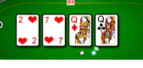

24 |
Grundregeln |
 |
Texas Hold 'Em Poker ist ein Kartenspiel mit vier Setzrunden. Ein Spieler ist der Geber, auch Button genannt. Diese Aufgabe wechselt nach jedem Blatt im Uhrzeigersinn.
Die beiden Spieler links vom Geber machen den Small Blind und den Big Blind. Sie sind die einzigen Spieler, die bereits vor dem Geben der Karten Geld im Pot haben.
Jeder Spieler bekommt verdeckt zwei Karten, genannt Hole Cards.
Die 1. Setzrunde beginnt mit dem Spieler links vom Big Blind und wird im Uhrzeigersinn fortgesetzt. Nach der 1. Setzrunde werden drei Gemeinschaftskarten, Flop genannt, aufgedeckt auf den Tisch gelegt.
Die 2. Setzrunde beginnt mit dem ersten noch übrigen Spieler links vom Geber und wird im Uhrzeigersinn fortgesetzt. Nach der 2. Setzrunde wird die 4. Gemeinschaftskarte, Turn genannt, aufgedeckt auf den Tisch gelegt.  Die 3. Setzrunde beginnt mit dem ersten noch übrigen Spieler links vom Geber und wird im Uhrzeigersinn fortgesetzt. Nach der 3. Setzrunde wird die 5. Gemeinschaftskarte, genannt River, aufgedeckt auf den Tisch gelegt.
Die 4. Setzrunde beginnt mit dem ersten noch übrigen Spieler links vom Geber und wird im Uhrzeigersinn fortgesetzt. Jeder Spieler muss seine Hole Cards und die Gemeinschaftskarten so kombinieren, dass er das bestmögliche Blatt aus 5 Karten erhält. Um ein Blatt zu formen, kann man beide Hole Cards, eine Hole Card oder überhaupt keine Hole Card ("Playing the board") verwenden. Wer das beste Blatt aus 5 Karten bilden kann, gewinnt den Pot. In Online-Spielen ist die Aktionszeit jedes Spielers begrenzt, damit ein flüssiger Spielablauf garantiert ist. Hinweis: Viele Spieler werden versuchen zu bluffen, damit du passt oder bei ihrem starken Blatt mitgehst. Andere Spieler richten sich stets nach den Wahrscheinlichkeiten, gehen kein Risiko ein und warten auf ein Superblatt. Falls du mehr über Poker lernen möchtest, empfehlen wir dir, einen Blick in die "Tipps" zu werfen. |


 |
 |
 |